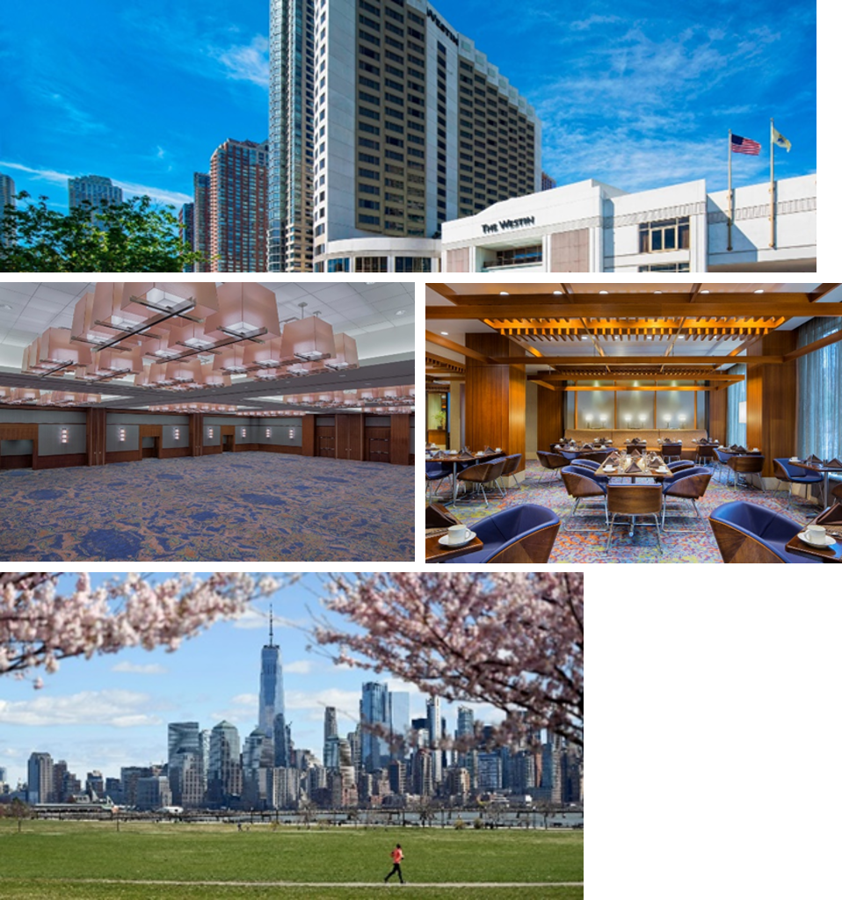
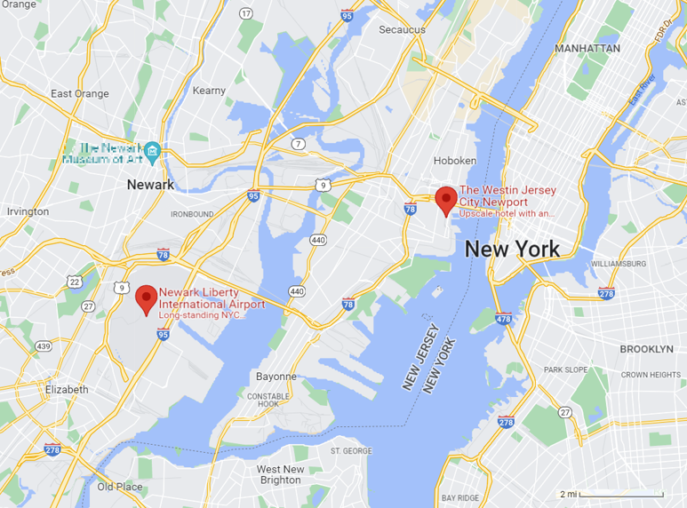

Conference Venue
MECC 2022 will be held at the Westin hotel at Jersey City Newport, managed by Marriott. The hotel is across the street from the west shore of Hudson river with spectacular views of New York City skyline. In addition to the close proximity to numerous attractions, foods, and activities, the hotel is close to the Newport Station of PATH trains, which conveniently connect the venue to New York City and the Liberty International Airport (EWR). The conference room rate for single/double occupancy is $249 per night, available over Saturday October 1 to Wednesday October 5, 2022.
Transportation
The airport closest to the venue is the Newark Liberty International Airport (EWR). It is one of the three major airports serving the greater NYC area and has direct flights to most main cities in the US, as well as many popular international destinations. The easiest way to travel to the hotel from the EWR airport is by rail transit:
- At Terminal C of the EWR airport, take the AirTrain of the airport to Newark Airport Railroad Station.
- At Newark Airport Railroad Station, take any train that goes to the Newark Penn Station.
- At the Newark Penn Station, take the PATH train that goes to Newport Station. (Depending on the arrival day, connection to a second PATH train might be needed at Journal Square Station or Grove Street Station.)
- From Newport Station, Westin Hotel is within walking distance (about 4 minutes).
More information can be found at www.njtransit.com
